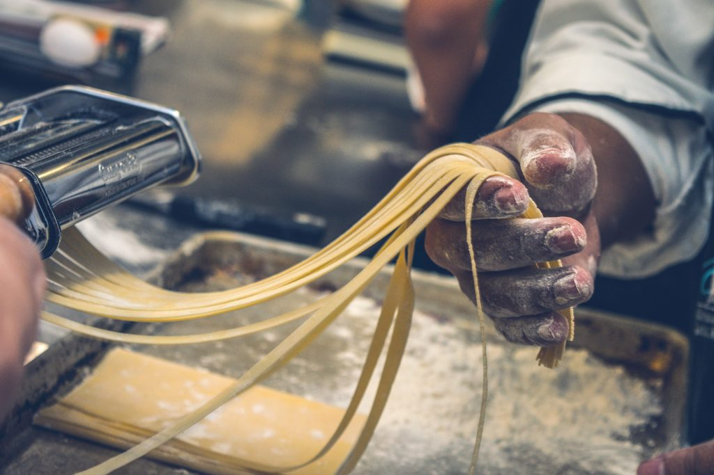

Home
Homemade pasta

To make good pasta always add 100 grams of flour per one egg.
Ingredients
- 200 g flour
- 2 eggs
- a pitch of salt
Preparation
- Make a mound of flour and crack the eggs into it, add a pitch of salt.
- Knead the dough thoroughly, it will require putting in some strength.
- Put it in the refrigerator for around 30 minutes to let the gluten start working.
- Roll out the dough and cut it to your liking.
- Boil the pasta to your liking.
And you are finished. Enjoy!